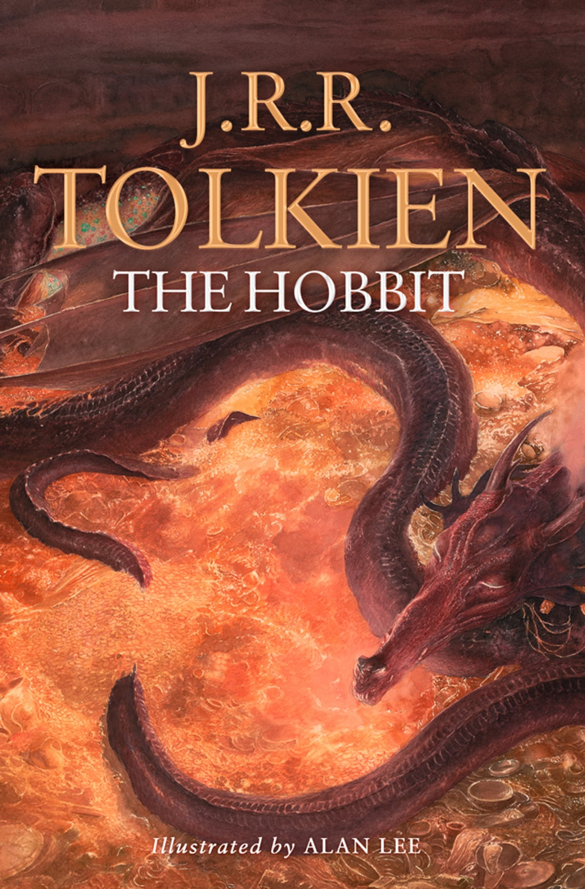

Two years ago, I went on a ski trip to Whistler in British Columbia, Canada. It was absolutely incredible and the views were like nothing I had ever seen before. However, it was such a pain to get there that I probably won't ever go back.
One of my favorite restaurants is Bowery Bar. They have an amazing vibe and have great appetizers. My parents prefer simple food and always like to go there when they come to visit me. I think they have the best nachos in the world, and I'm a sucker for great nachos.
My current favorite food is a sweet cream ice cream sundae from the IcecreamSmith in Dorchester. The sweet cream flavor is not overpowering and perfectly accentuates the flavor of whatever additions you have mixed into the sundae. On top of the ice cream must go a large scoopful of the marshmallow sauce with a nice swirl of whipped cream to top it off. Absolute perfection.
| Name of the Book | Cover | Author | Summary |
|---|---|---|---|
| Shogun | James Clavell | Set in Japan in the year 1600, Lord Yoshii Toranaga is fighting for his life as his enemies on the Council of Regents unite against him, when a mysterious European ship is found marooned in a nearby fishing village. | |
| Crime and Punishment | |
Fyodor Dostoevsky | A psychological novel that explores the moral dilemmas of Rodion Raskolnikov, a destitute ex-student in St. Petersburg, as he grapples with guilt and redemption after committing a murder. The novel delves into themes of justice, morality, and the complexities of human conscience. |
| The Count of Monte Cristo | Alexandre Dumas | A tale of revenge and redemption, following Edmond Dantès, a man wrongfully imprisoned. After escaping from prison and discovering a hidden fortune, he seeks vengeance on those who betrayed him, while also grappling with forgiveness and the consequences of his actions. | |
| The Hobbit |  | J.R.R Tolkien | A fantasy novel about Bilbo Baggins and his journey to reclaim the lost Dwarven Kingdom of Erebor from the dragon Smaug. |